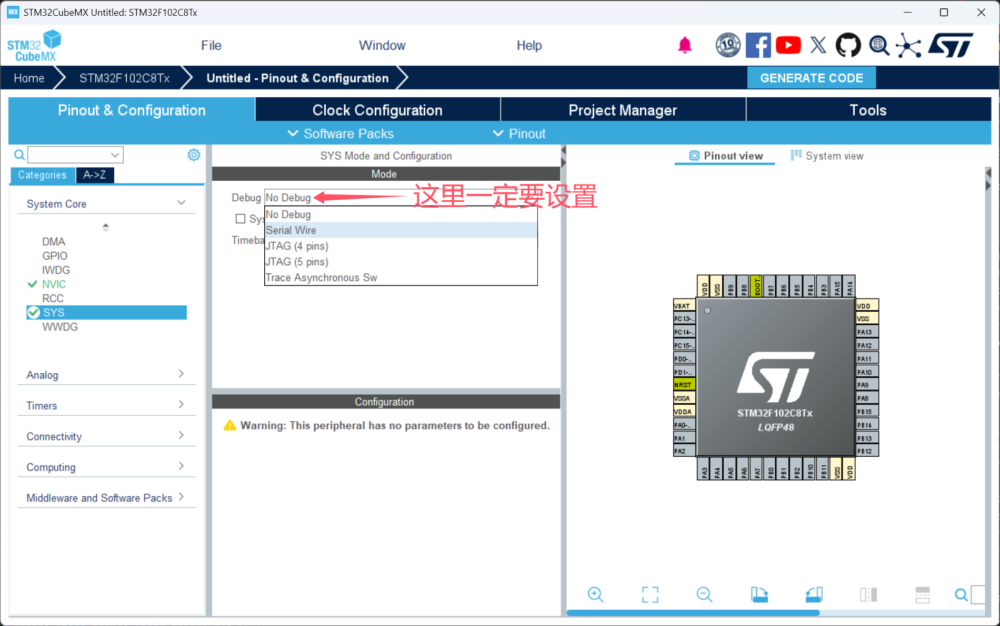
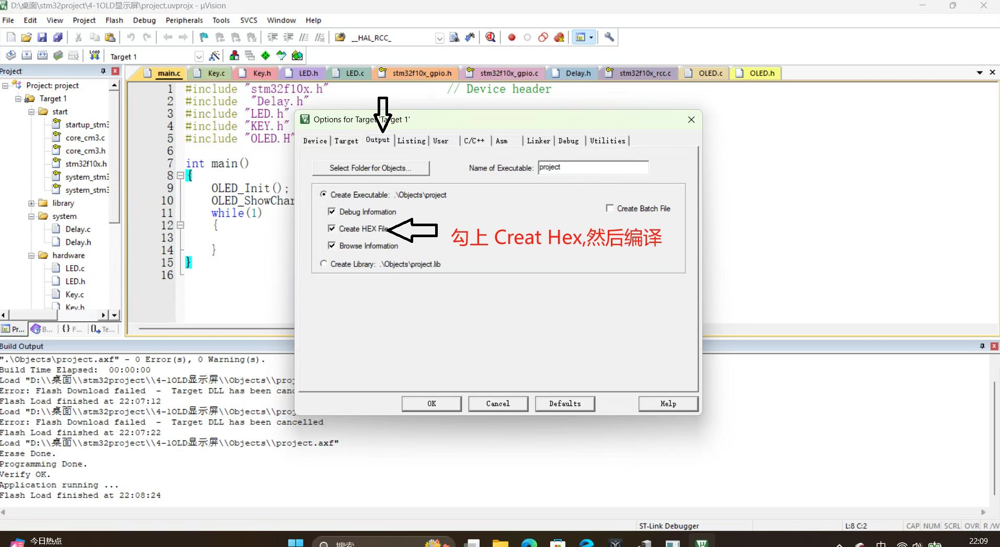
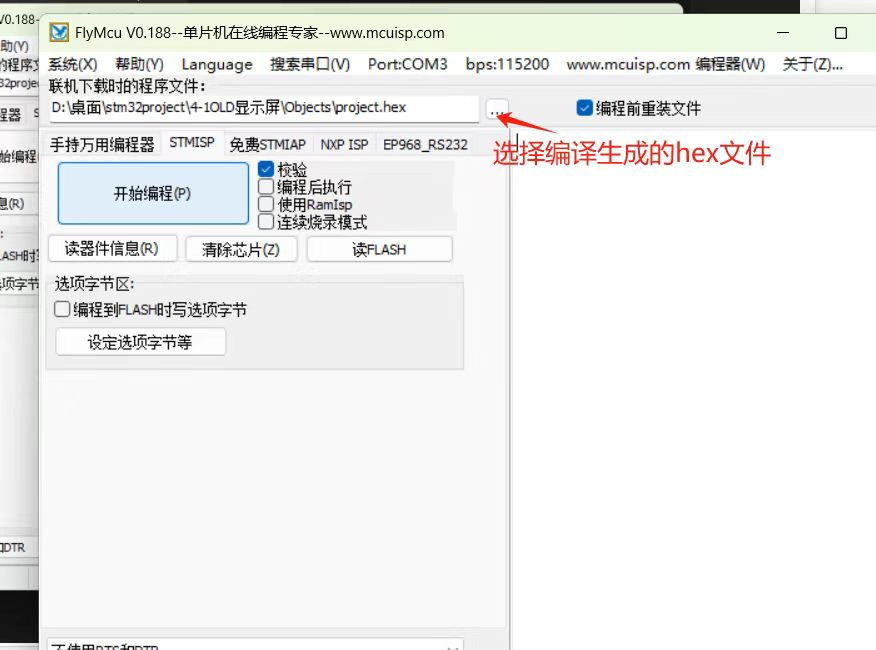
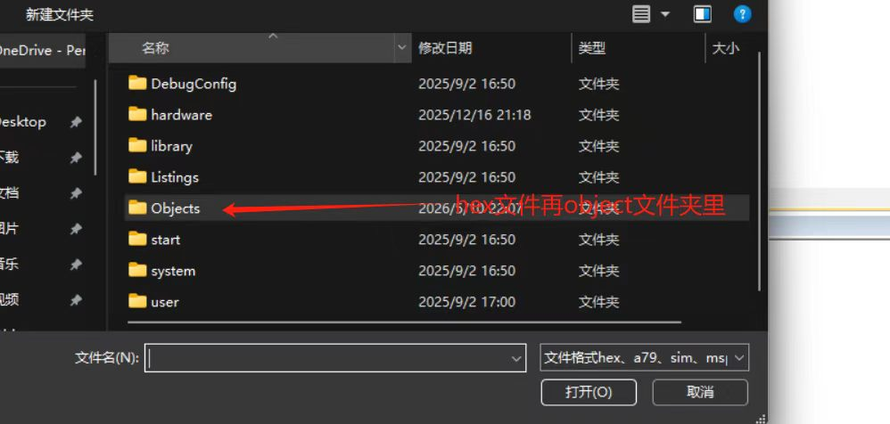
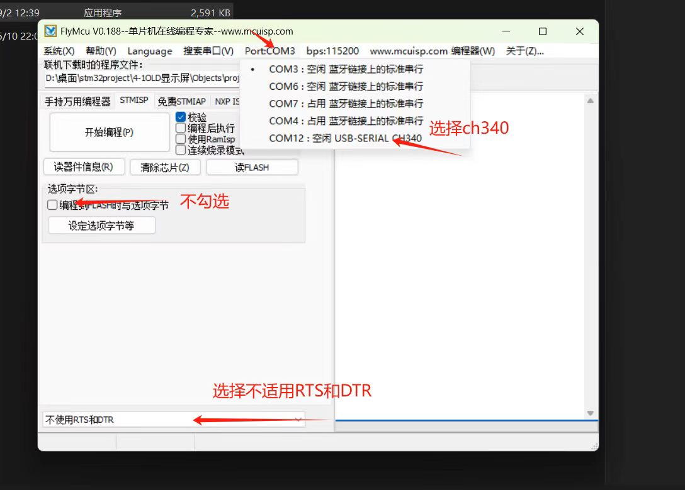

STM32 芯片锁死的解决
原因
没设置烧录方式，导致sw烧录口无法用

串口烧录法
可解决没设debug为sw造成的问题。
下载 FlyMcu
将 BOOT 0 引脚接高电平
编译二进制 hex 源文件

在 flymcu 中选择 hex文件


把 stm32 的串口用 TTL 转 USB 模块连接电脑
设置 flymcu

用 flymcu 烧录
将 boot0 接地 然后正常烧录